CO2 / MAG / MIG
일반 철구조물, 프레임, 부품 용접에 적합한 범용 아크용접 시스템
CO2 · MAG · MIG · TIG 용접 공정에 맞춘 Panasonic 로봇 자동화 시스템을 제공합니다.
로봇 본체, 컨트롤러, 용접기, 토치, 포지셔너, 외부축, 생산관리 기능까지 현장 조건에 맞춰 구성합니다.
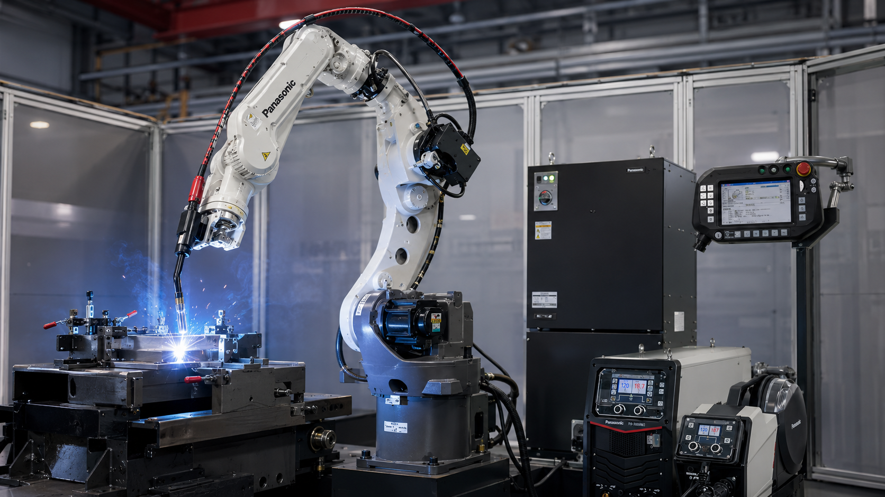
용접 방식, 워크 크기, 회전 작업 여부에 따라 적합한 로봇 시리즈와 주변 장비 구성이 달라집니다.
일반 철구조물, 프레임, 부품 용접에 적합한 범용 아크용접 시스템
정밀 용접, 박판, 고품질 외관 용접에 적합한 시스템
긴 암 길이와 외장형 토치를 활용한 대형 워크 대응
포지셔너와 외부축을 연동한 회전·다축 용접 시스템
소형 용접부터 대형 워크 대응까지, 공정 조건에 따라 다양한 암 길이와 페이로드의 Panasonic 로봇을 선택할 수 있습니다.
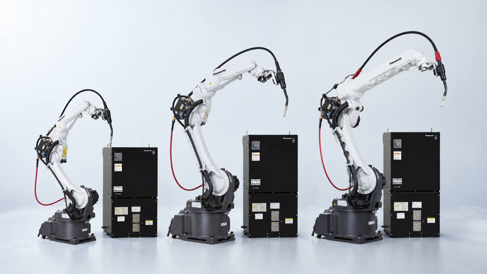
| 시리즈 | 모델 | 페이로드 | 추천 적용 |
|---|---|---|---|
| TS | 800, 950 | 8kg | 소형·고속 용접, 외장형 토치 |
| TM | 1100, 1400, 1600, 1800, 2000 | 6kg | 범용 용접 자동화, 분리형·스루암·외장형 |
| TL | 1800, 2000 | 8kg / 6kg | 대형물·장거리 용접 |
로봇 본체뿐 아니라 컨트롤러, Full Digital 용접기, 토치, 포지셔너, 외부축 장비가 하나의 용접 자동화 셀로 구성됩니다.
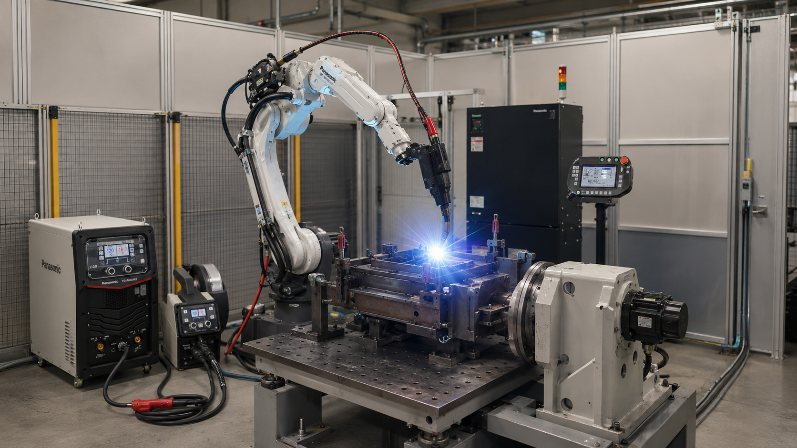
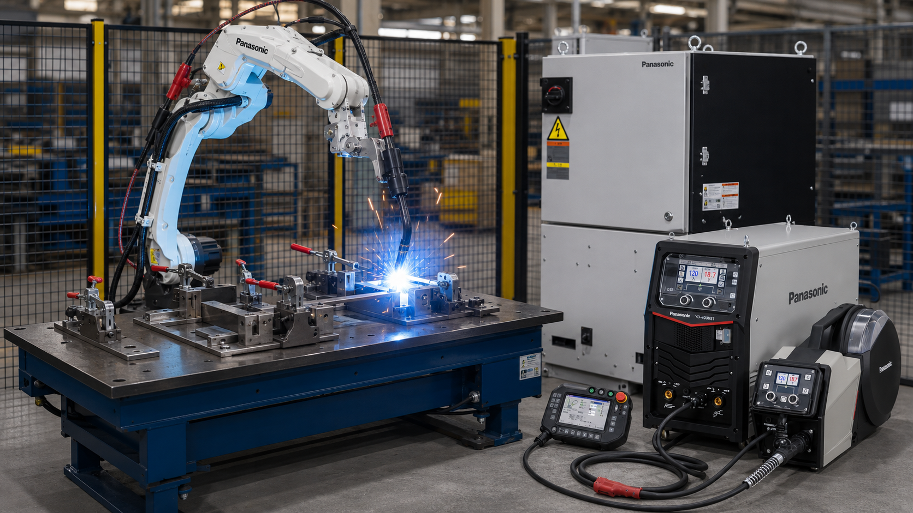
고속·고품질 아크용접을 위한 Panasonic Full Digital 로봇 시스템입니다.
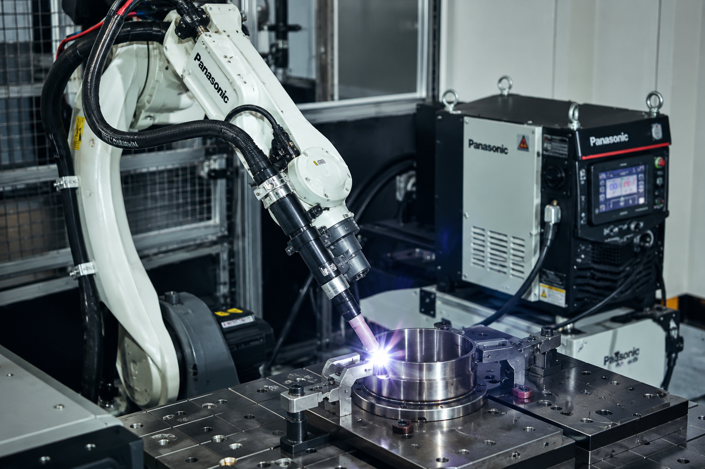
정밀 용접과 고품질 외관 용접에 적합한 시스템입니다.
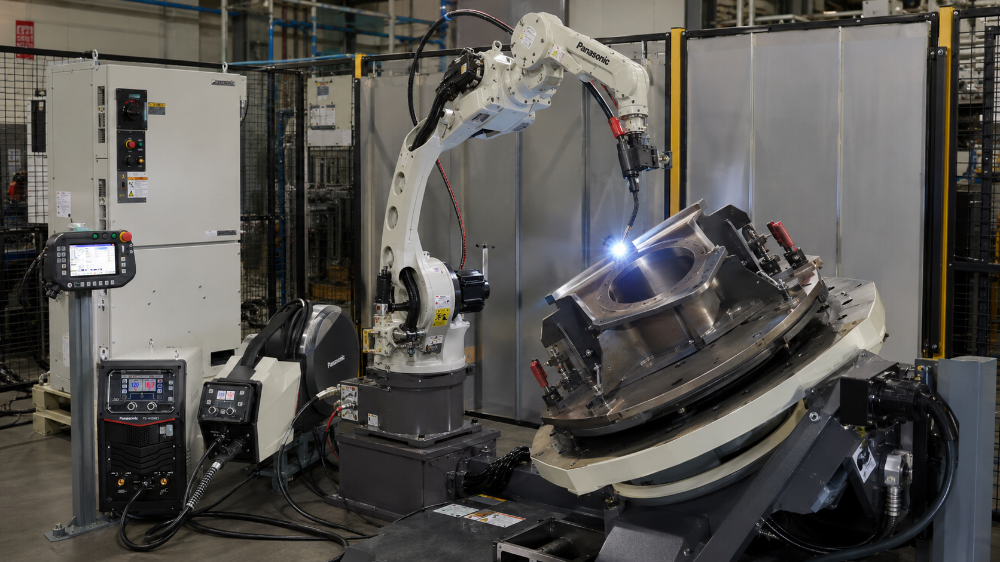
회전 작업과 다축 용접을 위한 연동 시스템입니다.
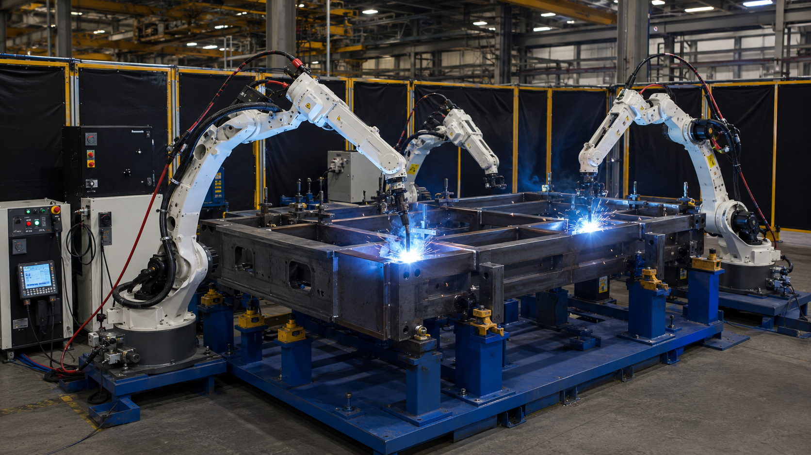
대형 워크와 복합 용접 셀 구성을 위한 시스템입니다.
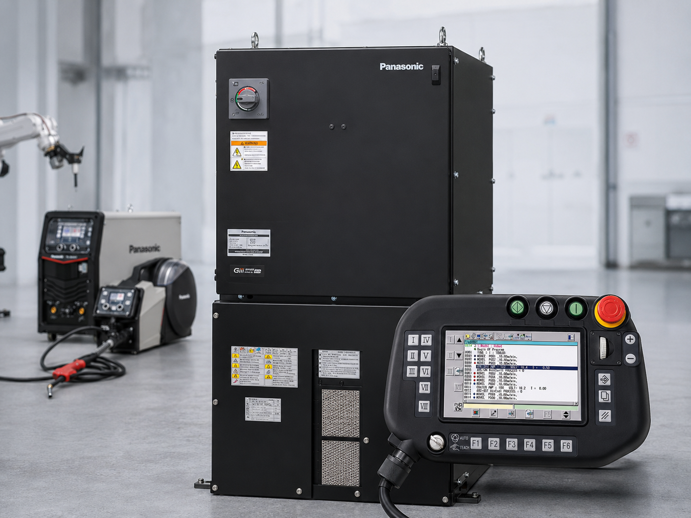
로봇 제어, 용접 조건 설정, 주변 장비 연동을 지원합니다.
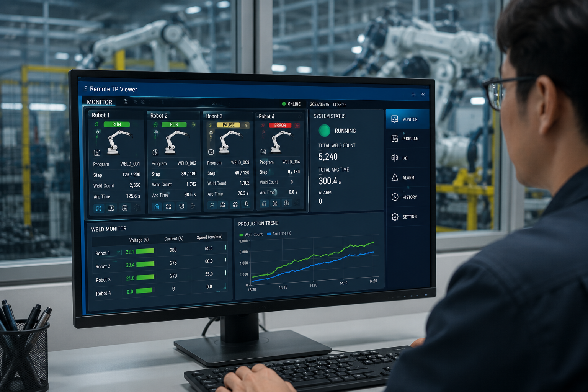
PC에서 로봇 상태와 생산 정보를 확인할 수 있는 모니터링 기능입니다.
현장 조건과 용접 공정에 따라 다양한 로봇 시스템 구성이 가능합니다.
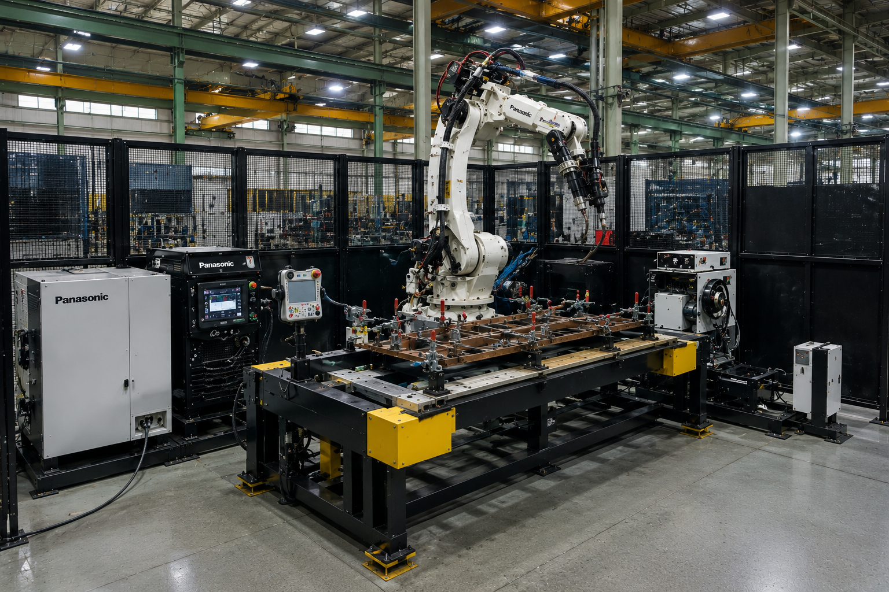
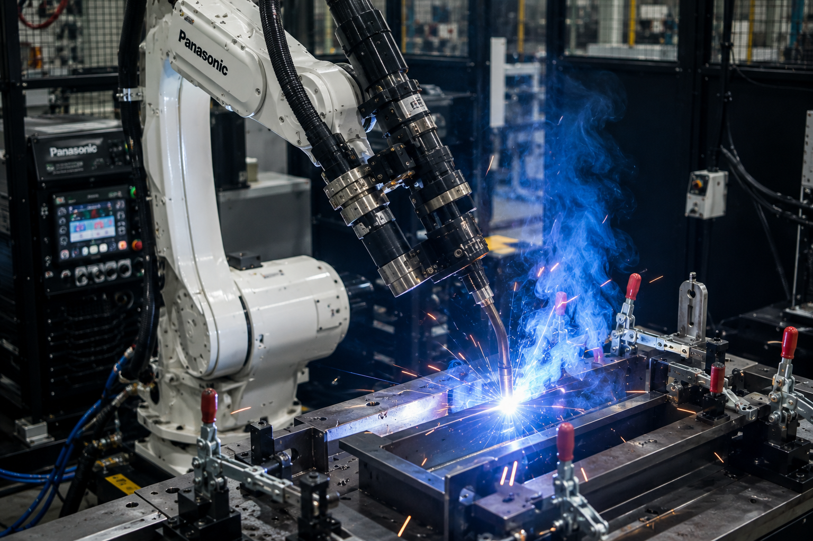
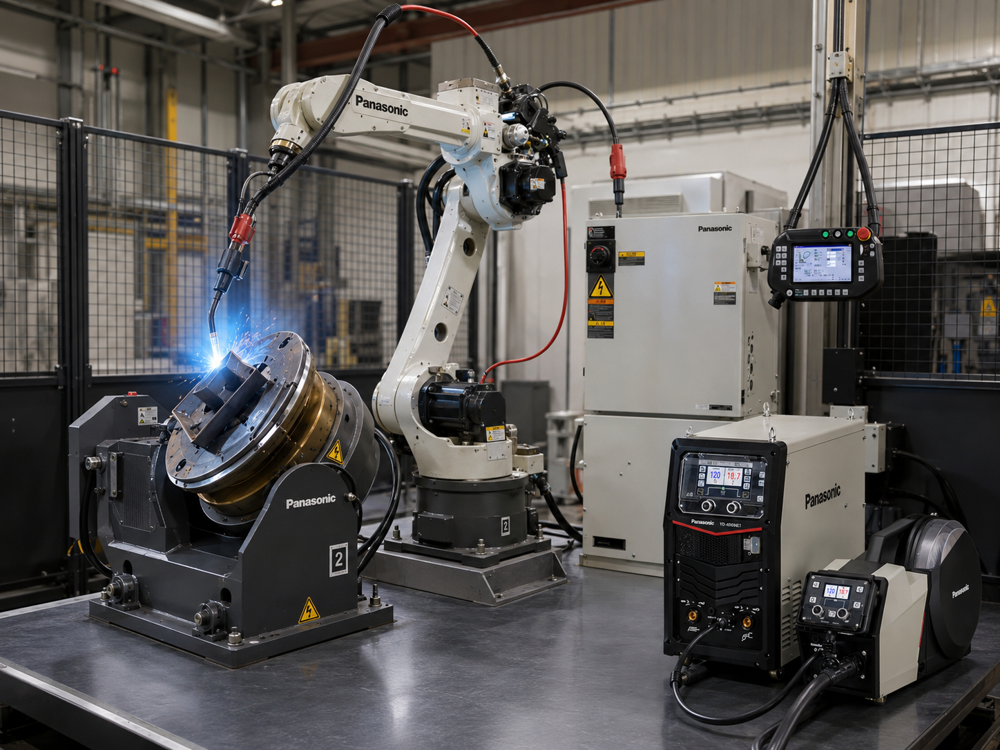
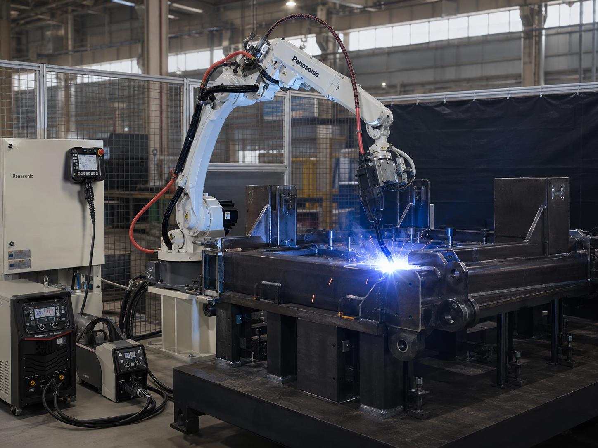
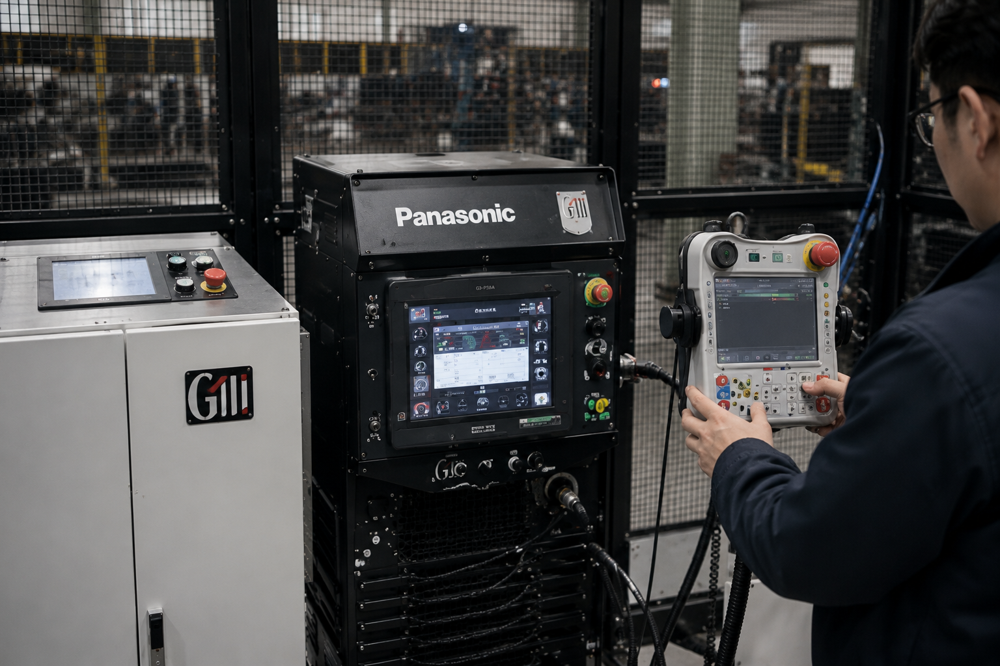
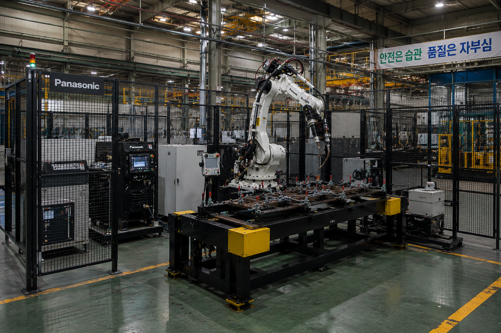
워크 크기, 용접 방식, 설치 환경, 생산 조건을 기준으로 적합한 Panasonic 용접로봇 시스템을 검토해드립니다.
제품 · 시스템 문의하기